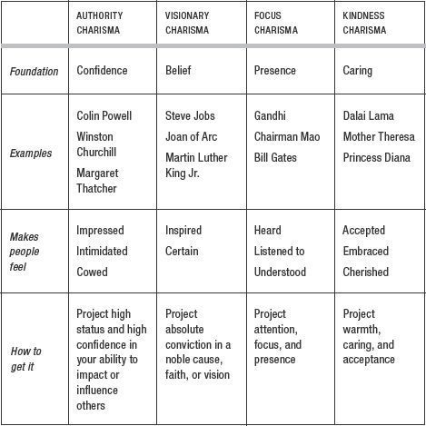
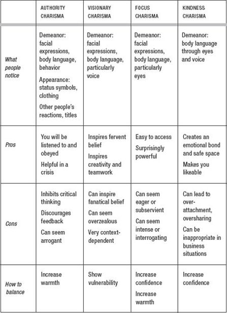

6
Different Charisma Styles
JUST AS THERE are different leadership and personality styles, there are also different charisma styles. Both Madonna and His Holiness the Dalai Lama draw crowds and are seen as charismatic, but for different reasons.
Throughout this chapter we’ll look at four distinct kinds of charisma: focus, visionary, kindness, and authority. We’ll see how each of these is perceived, how to develop it, and when to use it.
There are, of course, other kinds of charisma we could consider, but these four are the most practical for daily life, the easiest to access, and thus the most useful to study.
Focus Charisma: Presence and Confidence
Elon Musk, cofounder of PayPal and current CEO of Tesla Motors, embodies focus charisma. As he’ll tell you himself, Musk is very much an introvert. In Tesla’s open office space, his nearly empty desk is in the far right corner, two huge monitors arranged to create a cocoon, shielding him from the rest of the office.
However, when he emerges from behind the screens, he is fully present and fully focused. You can feel the intensity of his attention, how keenly he listens to and absorbs everything you say. And he doesn’t need to say a word to show you that he understands you: his nonverbal body language makes you feel completely listened to and understood. (You’ll learn the secrets to this kind of listening in chapter 8.)
Focus charisma is primarily based on a perception of presence. It gives people the feeling that you are fully present with them, listening to them and absorbing what they say. Focus charisma makes people feel heard, listened to, and understood. Don’t underestimate this kind of charisma; it can be surprisingly powerful.
Focus charisma can be highly effective in business. One executive who has worked closely with Bill Gates told me:
Most people think of charisma as people who are larger than life, who command a room with an over-the-top personality. But despite his unassuming appearance, being slight in build and looking like the stereotypical geek, Bill does command the room; his presence is immediately felt. If your definition of charisma is that when you walk into a room all eyes are on you, then Bill has it. If it’s that quality that draws people toward you and makes them want to listen to what you have to say, then Bill has that, too.
Jack Keeler, former president of IBM, was known as a very charismatic figure who embodied another key component of focus charisma: the ability to communicate respect. Remember that one of the foundations of charisma is making other people feel good about themselves. Keeler knew how to make others feel that their opinions mattered, and that they were important. He truly believed that even the most junior staff could have pearls of wisdom to impart. One executive who worked with him told me: “You’d see him go to plant manufacturers and engineers, and you could see that he held them in such high regard; he revered them. And in turn, they revered him—they’d light up when he’d walk into the room.”
What people notice: We assess focus charisma entirely through demeanor. Presence is key: because we can perceive any distracted, inattentive body language, such signals would quickly undermine focus charisma.
Developing Focus Charisma
Focus charisma requires, of course, the ability to focus and be truly present. Good listening skills are nonnegotiable, as is a certain degree of patience. To develop focus charisma, cultivate your ability to be present: make use of the techniques from the “Presence” section in chapter 2 (get into your toes!). You’ll also need the skills to handle charisma-impairing internal discomfort, so tools such as the responsibility transfer and delving into sensations are worth acquiring.
Once you have it: Focus charisma is perhaps the easiest form of charisma to access, and can be surprisingly effective, but it comes with two main risks. The first is that if you display too little power you could come across as too eager, and consequently low-status or even subservient. You’ll learn in chapter 9 how to increase the amount of confidence you broadcast. A less common risk is exhibiting too little warmth, which leads to attention that is too intense. If you become laser-focused, your interaction may start to feel like an interview, or, worse yet, an interrogation. This is where you need to balance focus with warmth and acceptance or genuine respect, and the following two chapters will show you just how to do that. Though it is primarily based on presence, focus charisma still requires a modicum of both confidence and warmth. You can’t discard either dimension entirely.
When to use it: Focus charisma is appropriate for almost all business situations. It’s particularly useful when you need people to open up and share information. In fact, this is a great charisma style for management consultants or those in other professional services, such as lawyers, accountants, and financial advisers. Focus charisma can also be very helpful in difficult situations, such as negotiations or to defuse hostile conversations. On the other hand, avoid focus charisma when you need to appear authoritative or during emergencies when you need immediate compliance.
Visionary Charisma: Belief and Confidence
Visionary charisma makes others feel inspired; it makes us believe. It can be remarkably effective even though it won’t necessarily make people like you. Steve Jobs was notoriously feared inside Apple and had many detractors both within and without, but even these detractors readily admitted to his being both visionary and charismatic. One recent attendee to a Steve Jobs presentation told me: “He spoke with such conviction, such passion, he had all of our neurons screaming, Yes! I get it! I’m with you!!!”
Why is visionary charisma so effective and powerful? Because of our natural discomfort with uncertainty. In a constantly changing world, we crave something solid to cling to. During George W. Bush’s first presidential campaign, polls of his supporters revealed that a key to their attraction to him was “his conviction and certitude in his beliefs.”
Conveying visionary charisma requires the ability to project complete conviction and confidence in a cause. In this way, visionary charisma is based on power. However, it is also based on warmth. Visionary charismatics aren’t necessarily warm people, but they do feel strongly, even passionately, about their vision. And to be truly charismatic, their vision must include a certain amount of nobility and altruism.
One reporter described Steve Jobs as being “driven by a nearly messianic zeal.… Jobs doesn’t sell computers. He sells the promise of a better world.” Visionary charismatics often promise redemption—think Joan of Arc or Martin Luther King Jr. With visionary charisma, you’re selling people on the vision more than on yourself.
What people notice: We assess visionary charisma primarily through demeanor, which includes body language and behavior. Due to the fact that people tend to accept whatever you project, if you seem inspired, they will assume you have something to be inspired about. For visionary charisma, appearance matters far less than it does for other charisma styles. You could be wearing rags and still successfully convey visionary charisma.
Developing Visionary Charisma
The message matters for visionary charisma. This means knowing how to craft a bold vision and knowing how to deliver the message charismatically (see chapter 11).
One of the keys to communicating your visionary charisma is getting yourself into a state of complete conviction, shedding any doubt. You can use the tools you gained in chapters 3 and 4, such as rewriting reality, to strengthen your belief, or the responsibility transfer, to free yourself from the effect of uncertainty.
Once you have it: Visionary charisma can inspire fervent belief and lead monumental change. However, it can also inspire fanatical belief and lead people to disastrous decisions (cult leader Jim Jones persuaded nine hundred people to commit mass suicide).
When to use it: Visionary charisma is important at times when you need to inspire people. It’s particularly helpful when you want to inspire creativity.
Kindness Charisma: Warmth and Confidence
When you’re a baby, no matter what you do your parents will think you’re perfect just as you are. But after a few months, their acceptance becomes conditional. You now have to eat your carrots and smile at Grandma to earn approval. Seldom will you feel again such complete unconditional acceptance from anyone, with the exception, perhaps, of the first few stages of falling in love.
One of the reasons that the Dalai Lama has such a powerful effect on people is his ability to radiate both tremendous warmth and complete acceptance. People who may have never felt completely, wholeheartedly accepted suddenly feel truly seen and enveloped in acceptance. This is kindness charisma in action.
Kindness charisma is primarily based on warmth. It connects with people’s hearts, and makes them feel welcomed, cherished, embraced, and, most of all, completely accepted.
What people notice: Like visionary and focus charisma, kindness charisma comes entirely from body language—specifically your face, and even more specifically your eyes.
Developing Kindness Charisma
You, too, can learn how to emanate some of the Dalai Lama magic, though it does require willingness, patience, practice, and the right tools. Start with the mindset: practice accessing warmth with internal tools such as gratitude, goodwill, compassion, and self-compassion from chapter 5. You’ll learn in chapter 9 how to emanate warmth from your face, body language, and demeanor and how to make the right kind of eye contact.
Because kindness charisma is heavily dependent on warmth, it is vital to avoid any body language of tension, criticism, or coldness. The internal tools for dealing with mental or physical discomfort from chapter 4 can be invaluable here.
Once you have it: Though kindness charisma is based primarily on warmth, without power you risk coming off as overeager to please. This is where the ability to convey a modicum of power becomes important.
The tools you gained in chapter 5—visualization, warming up, and using your body to change your mind—will help you get the right mindset. The following chapters will help you balance warmth and power in your body language.
Kindness charisma has its costs. One of my dear friends radiates such kindness charisma that people become enraptured wherever she goes. From colleagues at the office to cashiers at the supermarket, people feel accepted and cared for as soon as they’re in her presence. This can be lovely, but it can also be a heavy burden for her to carry. She suffers pain and guilt when these people, having become enchanted, feel hurt or resentful when she can’t make room for them in her life. This is one of the downsides of kindness charisma: it can lead to adulation and, potentially, overattachment. You will gain tools to prevent these side effects in chapter 13, on living a charismatic life.
When to use it: Kindness charisma is perfect anytime you want to create an emotional bond or make people feel safe and comfortable. It can be critical in some situations, such as when you have to deliver bad news (see chapter 12). It can also be a surprisingly effective tool when dealing with difficult people (and chapter 12 will cover that, too). However, just as with focus charisma, you may want to avoid it when you need to appear authoritative or when there’s a risk that people might get too comfortable and share too much (thankfully, you have chapter 13 to help you avoid this).
Authority Charisma: Status and Confidence
This form of charisma is possibly the most powerful one of all. Our instinctive deference to authority can take epic proportions, and, of course, can be equally turned toward good or evil. Colin Powell and the Dalai Lama embody authority charisma, but so did Stalin and Mussolini. The human reaction to authority runs deep; it’s hardwired into our brains.1
Those who possess authority charisma are not necessarily likable. Michael Jordan, at the height of his career with the Chicago Bulls, told a journalist that he cared much more about being a leader than about being liked. The reporter wrote: “He rankles, sometimes infuriates, his teammates. But he uses his charisma to lift the whole team’s level of play.”
What people notice: Authority charisma is primarily based on a perception of power: the belief that this person has the power to affect our world. We evaluate someone’s authority charisma through four indicators: body language, appearance, title, and the reactions of others.
We appraise body language first and foremost. Does it emanate confidence in the person’s power to influence others, or to affect the world around them?
Second, we assess appearance. We are biologically programmed to care about status and to be impressed by it because this instinctive reaction favors our survival: high-status individuals have the power to help or hurt us. To survive, we need to know where in the pecking order we stand. As a consequence, we’re exquisitely fine-tuned to any clues that can help us determine other people’s status.
Clothing is one of our first and strongest clues in evaluating status, thus potential power, and thus authority charisma. We look for signs of expertise (doctors’ white coats) or high authority (military or police uniforms). We pay particular attention to signs of high social status or success, such as expensive clothing. In one experiment conducted in New York City, people tended to follow a jaywalker dressed in an expensive suit sooner than one dressed in more casual clothing.2
In another experiment, a researcher conducted fake surveys in shopping malls wearing either a designer-logo sweater or a no-logo sweater. When faced with the designer label, 52 percent of people agreed to take the survey, compared with only 13 percent who saw no logo. Expensive logos also affected people’s charitable impulses. Research assistants brought in nearly twice as many donations when their shirts bore a visible designer label than they did when they wore (otherwise identical) no-label shirts.3
Finally, a person’s title and the way others react to them give us more clues about their authority charisma, though these last two factors carry less weight than the previous two. Instinctively, we understand that someone who has a high title but garners little respect has less real power than someone of lower title who is greatly respected.
Though all these assessments can happen in less than a second, the order is nonetheless important. If there is a conflict between signals, we’ll trust the signals in the order you’ve just seen. As always, body language trumps all other signs of charisma. Even if all the other signals are present, a body language of insecurity will undermine any possibility of authority charisma. Conversely, you can gain a certain measure of authority charisma through body language alone if it’s strong enough.
Developing Authority Charisma
Your main aim if you want to gain authority charisma is to project power by displaying signs of status and confidence. Luckily, the two most important dimensions of status and confidence are also the ones over which you have the most influence: body language and appearance.
Because it is affected so strongly by body language, your authority charisma depends on how confident you feel in that moment. This is where the tools you gained in chapter 5 come in: you can use visualizations, warm-ups, or your body to change your mind to get into a confident mental state.
To project power and confidence in your body language, you’ll need to learn how to “take up space” with your posture, reduce nonverbal reassurances (such as excessive nodding), and avoid fidgeting. You may need to speak less, to speak more slowly, to know how and when to pause your sentences, or how to modulate your intonation. We’ll cover all the specifics of emanating power through your body language in chapter 9.
As far as appearance goes, choosing clothing that appears expensive or high-status is one of the easiest ways to look authoritative.
Once you have it: Authority charisma has the advantage that you get listened to and often obeyed. It does, however, have several disadvantages:
- It can inhibit critical thinking in others.
- It doesn’t invite feedback, so you risk not receiving information you actually need.
- It can easily make you appear arrogant.
This is where learning to emanate warmth can be your saving grace. Not only will your warmth reduce the risk of your being perceived as arrogant or intimidating, it will also be more highly valued because you’re now seen as high-status. If a low-status person is eager to please us, we may find this pleasant, but we don’t necessarily value their eagerness very highly. After all, they can’t do much for us; it’s rather we who can do things for them. On the other hand, if a high-status alpha grants us attention and warmth, we’re thrilled, because they can move mountains.
When to use it: Authority charisma works well in many business situations, and in any situation where you want people to listen and obey. It’s particularly useful during a crisis (see chapter 12), and whenever you need immediate compliance from people. On the other hand, you might want to avoid it in social settings such as weddings or funerals or in sensitive business situations such as delivering bad news. Avoid it also when you want to encourage creativity or constructive feedback, as it can inhibit critical thinking in others. In these cases, use visionary, focus, or warmth charisma instead.
Choosing the Right Charisma
There isn’t just one way to be charismatic, nor does one charisma style work in every situation. When are certain styles more effective? Which style will suit you best? Determining your preferred charisma style and knowing when to use it is a crucial step toward fulfilling your charisma potential.
Different kinds of charisma will be appropriate in different circumstances. And different kinds of charisma will be a better or poorer fit for you. To decide which elements of charisma to bring out you’ll need to assess three indicators: what’s best suited to your personality, your goals, and the situation.
- Your personality: It’s important to know what feels right for you, and to choose the styles, tools, and techniques that match your signature strengths.
- Your goals: You also need to be clear on what you want to achieve. Some modes of charisma will make people obey you, others will lead them to open up and share.
- The situation: What context are you stepping into? The situation sets the stage upon which your charisma will play out.
The Right Charisma for You
The first consideration is your fundamental character.
One of John Kerry’s mistakes during the 2004 presidential campaign was trying to “dumb down” his focused, intellectual charisma to become more “accessible.” Not only was this ineffective, it also backfired by alienating those who had been drawn to his original personality. His discomfort made him appear awkward and inauthentic.
On the other hand, in the world of business, Steve Jobs cultivated and stayed true to his kind of visionary charisma and, despite what may be said of his personality or leadership style, always came across as authentic as well as powerful. Oprah Winfrey has spoken about her decision to be authentic as a critical turning point in her career. Once she gave up her attempts to be “the next Diane Sawyer,” she flourished as “the best Oprah she could be.”
You don’t have to force yourself into one particular style to be charismatic, and I firmly advocate not doing something that goes against your values: it would only work against you. Trying to force yourself into a charisma style that really isn’t right for you can be as unpleasant as it is counterproductive. For example, an introvert forcing himself to be extroverted might feel unnatural and awkward, and be perceived that way by others. Not only would he put himself through an unpleasant experience, he would also fail in his quest to appear naturally extroverted. Instead of fighting it, knowing how to work with your natural style can reap major rewards.
Putting It into Practice:
Working with Introversion
If you’re naturally uncomfortable in large social gatherings, the next time you’re at a party, don’t force yourself to be sociable right away or to be “on” for the whole evening. Instead, try these easy tweaks. Give yourself five minutes after you arrive to hang back and observe. Then give yourself little “introversion breaks” during the party: five-minute pockets of solitude. I know one highly charismatic introvert who often does exactly that during both social and business events. When she reemerges to mingle, people frequently comment on how radiant she is.
Not only do you not have to force yourself into one particular charisma style, you don’t have to limit yourself to just one style. These styles are just examples of how the different elements of charisma play out in the world around us. In reality, you can alternate between several modes of charisma, from one moment to the next. The more modes you master, the more versatile you can be.
The ability to adapt to a variety of social situations is characteristic of highly charismatic people. Hayes Barnard, the charismatic CEO of Paramount Equity, told me that he sees himself as a Swiss Army knife, adaptable to any situation. When he moves through a room, he intentionally varies his voice and body language according to the person or people he is speaking to. In selecting leaders, he looks for people who have a similar ability to adapt in multiple ways.
This is really just a matter of accessing different aspects of your personality and getting comfortable expressing them—we all have within us a measure of kindness or a modicum of authority. As you practice each style, it will gradually become more natural. Practice enough, and these behaviors become as easy and comfortable as brushing your teeth.
Not only can you flow from one mode of charisma into another, you can also mix and match, adding a dash of kindness to your authority charisma or infusing some confident authority into your focus charisma. Oprah can demonstrate focus, kindness, and in some cases even visionary charisma during a single interview.
Presidents Clinton and Obama both embody visionary charisma. Both have a touch of authority. However, Obama leads with focus. People who meet him say that his intelligence is palpable, and that he intensely focuses on whomever he is interacting with. Clinton, on the other hand, leads with warmth. He’s known for being “off-the-charts empathetic.”
When choosing a charisma style, remember to check in with your mental and emotional state. If you’re feeling insecure, don’t try to pull off authority charisma until you’ve regained your confidence. Instead, choose a charisma style that demands less confidence, such as focus or kindness, and then gradually move to authority if you so desire. Or take the time to ramp up your confidence so you will be ready to broadcast authority charisma.
The second consideration when choosing a charisma style is the goal you want to accomplish. How do you want to make others feel? How do you want them to react to you? For instance, if you want to be listened to and obeyed, authority charisma is ideal. The previous sections gave you an idea of which charisma style can best support which goal. As you practice each style you’ll get a feel for which works best in different situations.
The Right Charisma for Each Situation
The third consideration when choosing a charisma style is the situation you’re in.
There are scores of situations in life where certain kinds of charisma, no matter how powerful, are not welcome. On the other hand, certain situations specifically call for certain kinds of charisma. For example, studies consistently show that in times of crisis, people turn to individuals who are bold, confident, and decisive.4 This is the time to bring out authority or visionary charisma.
The context in which you operate sets the lens through which others will perceive you and your charisma.
First, let’s look at the emotional context. People’s emotional states influence their perception of you, and either enhance or inhibit the power of your charisma. Certain emotional states, such as a feeling of crisis or urgency, increase the chance that people will find you charismatic. However, there can be charisma without crisis: President George W. Bush was considered charismatic well before the turmoil of 9/11.
To get a sense for the emotional context around you, simply ask yourself: How are the people around you feeling? What do they need in this moment? If you’re firing someone, authority charisma might not be most fitting—you may want to bring out focus or kindness charisma instead. And just like Oprah, you can alternate among several modes of charisma, playing on different parts of your personality as you respond to different aspects of the situation.
Social context matters, too: one behavior could be seen as charismatic in the United States but not in Japan. The same amount of eye contact that would be welcomed as an honest, straightforward gaze in most of North America could be seen as aggressive and obnoxious in parts of Asia. Though presence, warmth, and power are the fundamental elements of charisma, how they get expressed varies somewhat from culture to culture.
However, with all this said, if you get your mental state and behavior right, you’re 80 percent of the way there. Facial expressions are universal,* so an expression of goodwill, empathy, or concern would be perceived in New York exactly as it would be in New Delhi or even Papua New Guinea.
More important, people give great credence to the intentions they perceive you to have. So if, for instance, you can get yourself into a mental state of goodwill, this would show in your facial expressions and body language and register with people on a deep emotional level. People perceiving this would want to like you, want to see your behaviors and actions in the most positive way. Think of goodwill as your charisma safety net: as long as you can get into a state of goodwill, you will have the absolute best chances of getting your charisma right (you can refer back to chapter 5 for goodwill-boosting techniques).
In addition, you can be strategic in choosing when to try out new charisma styles: choose low-stakes situations to expand the boundaries of your comfort zone. If, for instance, you’re going to a networking event or a cocktail party that will have little impact on your career or your social life, use it as a testing ground. This is the time to experiment and try out new behaviors. Use these occasions to get progressively comfortable with new charisma styles. You could even practice new techniques in short, casual interactions with cashiers or doormen.
On the other hand, when you’re in a high-stakes situation—about to give a key presentation, or going for a job interview—don’t take the risk of coming across as uncomfortable or inauthentic. In cases like these, it’s best to stick with the behaviors and charisma styles that are most natural to you.


KEY TAKEAWAYS
Choosing the right charisma style depends on your personality, goals, and the situation.
* Paul Ekman’s fascinating research on this topic led him to travel around the world, going to the most remote locations and studying tribes of hunter-gatherers, cataloging and testing more than ten thousand facial expressions.